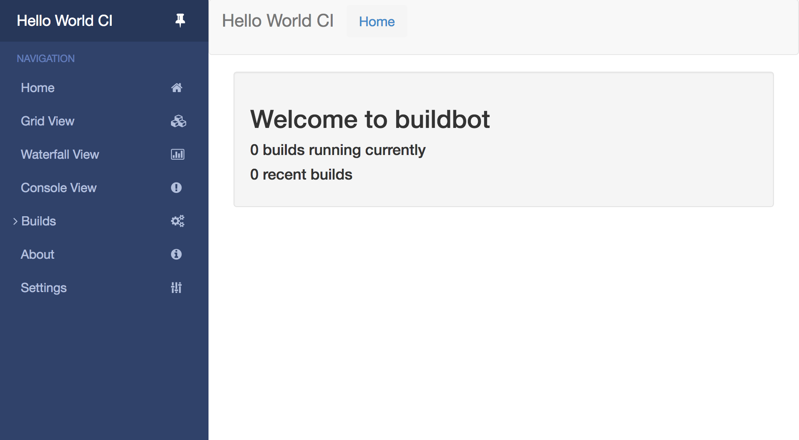
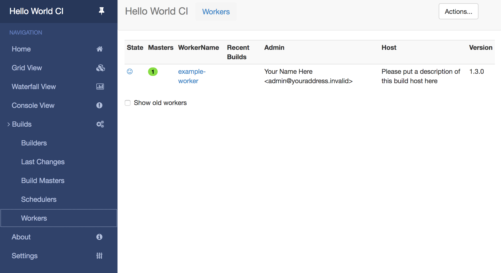
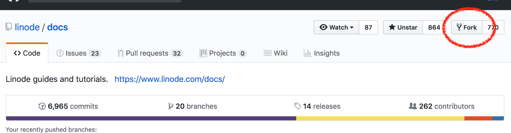
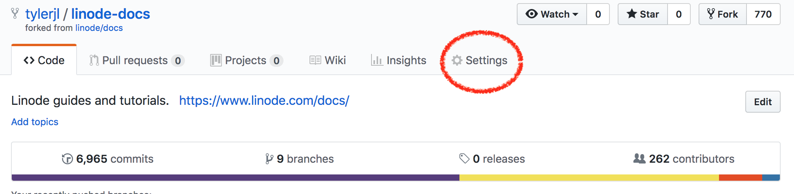
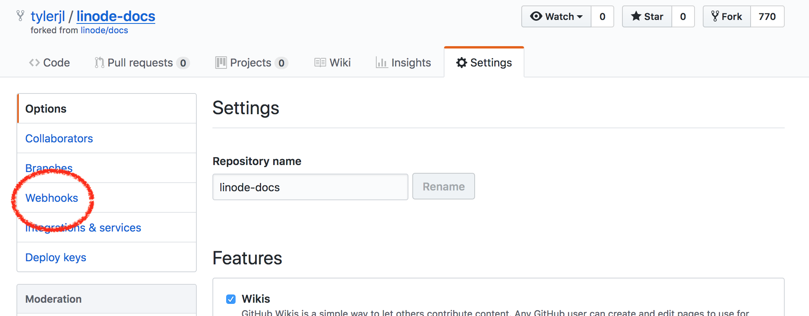
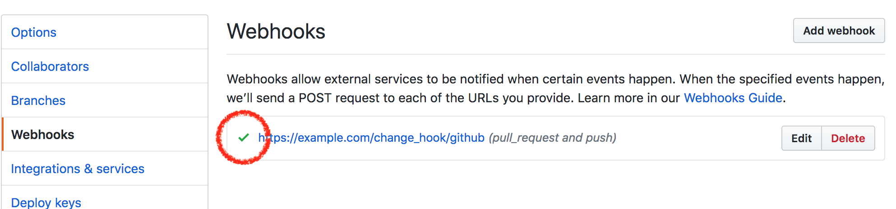
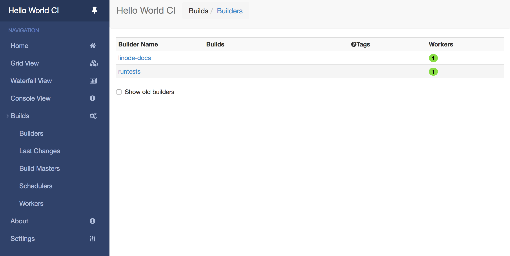
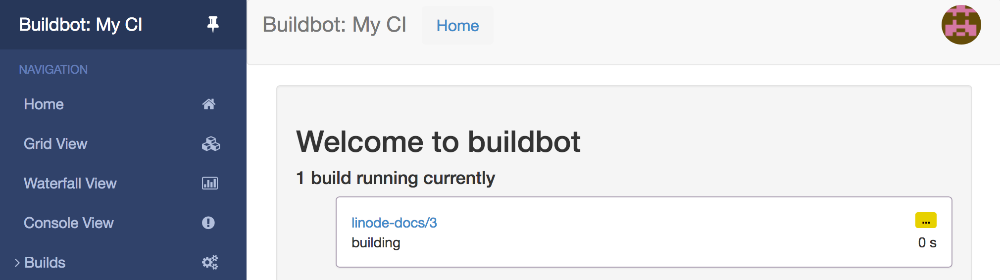
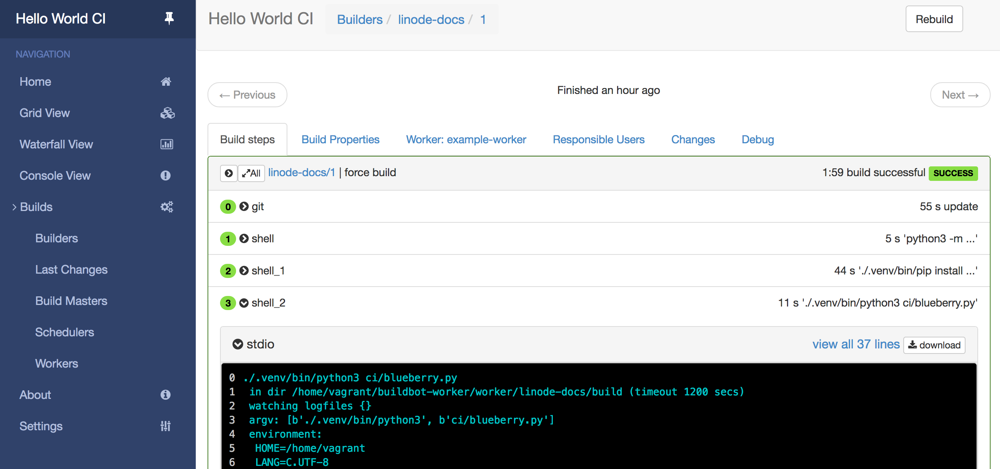

Use Buildbot for Software Testing on Ubuntu 18.04
Updated by Linode Written by Tyler Langlois
Dedicated CPU instances are available!Linode's Dedicated CPU instances are ideal for CPU-intensive workloads like those discussed in this guide. To learn more about Dedicated CPU, read our blog post. To upgrade an existing Linode to a Dedicated CPU instance, review the Resizing a Linode guide.
Buildbot is an open source system for testing software projects. In this guide, you will set up a Linode as a Buildbot server to use as a continuous integration platform to test code. Similarly to hosted solutions like Travis CI, Buildbot is an automated testing platform that can watch for code changes, test a project’s code, and send notifications regarding build failures.
Before you Begin
Familiarize yourself with Linode’s Getting Started guide and complete the steps for deploying and setting up a Linode running Ubuntu 18.04, including setting the hostname and timezone.
This guide uses
sudowherever possible. Complete the sections of our Securing Your Server guide to create a standard user account, harden SSH access and remove unnecessary network services.Ensure your system is up to date:
sudo apt update && sudo apt upgradeComplete the Add DNS Records steps to register a domain name that will point to your Linode instance hosting Buildbot.
Note
Replace each instance ofexample.comin this guide with your Buildbot site’s domain name.Your Buildbot site will serve its content over HTTPS, so you will need to obtain an SSL/TLS certificate. Use Certbot to request and download a free certificate from Let’s Encrypt.
sudo apt install software-properties-common sudo add-apt-repository ppa:certbot/certbot sudo apt update sudo apt install certbot sudo certbot certonly --standalone -d example.comThese commands will download a certificate to
/etc/letsencrypt/live/example.com/on your Linode.Note
The steps to install NGINX will be covered in the Set up the Buildbot Master Web Interface section of the guide.
Install Buildbot
Install the Buildbot Master
Since Buildbot is provided as an Ubuntu package, install the software from the official Ubuntu repositories.
Install the
buildbotpackage along withpip3, which will be used to install additional python packages:sudo apt-get install -y buildbot python3-pipInstall the required Buildbot Python packages:
sudo pip3 install buildbot-www buildbot-waterfall-view buildbot-console-view buildbot-grid-viewThe
buildbotpackage sets up several file paths and services to run persistently on your host. In order to create a new configuration for a Buildbot master, enter the directory for Buildbot master configurations and create a new master calledci(for “continuous integration”).cd /var/lib/buildbot/masters sudo -u buildbot -- buildbot create-master ciThe generated master configuration file’s location is
/var/lib/buildbot/masters/ci/master.cfg.sample.Make a copy of the default configuration to the path that Buildbot expects for its configuration file:
sudo cp ci/master.cfg.sample ci/master.cfgChange the permissions for this configuration file so that the
buildbotuser has rights for the configuration file:sudo chown buildbot:buildbot ci/master.cfg
Configure the Buildbot Master
In order to secure and customize Buildbot, you will change a few settings in the master configuration file before using the application. The master configuration file’s location is /var/lib/buildbot/masters/ci/master.cfg.
Buildbot has a number of concepts that are represented in the master build configuration file. Open this file in your preferred text editor and browse the Buildbot configuration. The Buildbot configuration is written in Python instead of a markup language like Yaml.
Generate a random string to serve as the password that workers will use to authenticate against the Buildbot master. This is accomplished by using
opensslto create a random sequence of characters.openssl rand -hex 16 <a random string>Update the following line in the
master.cfgfile and replacepasswith the randomly-generated password:- /var/lib/buildbot/masters/ci/master.cfg
-
1 2 3 4 5 6 7... # The 'workers' list defines the set of recognized workers. Each element is # a Worker object, specifying a unique worker name and password. The same # worker name and password must be configured on the worker. c['workers'] = [worker.Worker("example-worker", "pass")] ...
Uncomment the
c[title]and thec[titleURL]lines. If desired, change the name of the Buildbot installation by updating the value ofc[title]. Replace thec[titleURL]value with the URL of your Buildbot instance. In the example, the URL value is replaced withexample.com.- /var/lib/buildbot/masters/ci/master.cfg
-
1 2 3 4 5... c['title'] = "My CI" c['titleURL'] = "https://example.com" ...
Uncomment the
c['buildbotURL']line and replace the URL value with the your Buildbot instance’s URL:- /var/lib/buildbot/masters/ci/master.cfg
-
1 2 3 4... c['buildbotURL'] = "https://example.com/" ...
These options assume that you will use a custom domain secured with Let’s Encrypt certificates from
certbotas outlined in the Before You Begin section of this guide.Uncomment the web interface configuration lines and keep the default options:
- /var/lib/buildbot/masters/ci/master.cfg
-
1 2 3 4 5... c['www'] = dict(port=8010, plugins=dict(waterfall_view={}, console_view={}, grid_view={})) ...
By default, Buildbot does not require people to authenticate in order to access control features in the web UI. To secure Buildbot, you will need to configure an authentication plugin.
Configure users for the Buildbot master web interface. Add the following lines below the web interface configuration lines and replace the
myusernameandpasswordvalues with the ones you would like to use.- /var/lib/buildbot/masters/ci/master.cfg
-
1 2 3 4 5 6 7 8 9 10 11 12 13 14 15 16... c['www'] = dict(port=8010, plugins=dict(waterfall_view={}, console_view={}, grid_view={})) # user configurations c['www']['authz'] = util.Authz( allowRules = [ util.AnyEndpointMatcher(role="admins") ], roleMatchers = [ util.RolesFromUsername(roles=['admins'], usernames=['myusername']) ] ) c['www']['auth'] = util.UserPasswordAuth([('myusername','password')]) ...
Buildbot supports building repositories based on GitHub activity. This is done with a GitHub webhook. Generate a random string to serve as a webhook secret token to validate payloads.
openssl rand -hex 16 <a random string>Configure Buildbot to recognize GitHub webhooks as a change source. Add the following snippet to the end of the
master.cfgfile and replacewebhook secretwith the random string generated in the previous step.- /var/lib/buildbot/masters/ci/master.cfg
-
1 2 3 4 5 6c['www']['change_hook_dialects'] = { 'github': { 'secret': 'webhook_secret', } }
Finally, start the Buildbot master. This command will start the Buildbot process and persist it across reboots.
sudo systemctl enable --now buildmaster@ci.service
Set up the Buildbot Master Web Interface
Buildbot is now running and listening on HTTP without encryption. To secure the connection, install NGINX to terminate SSL and reverse proxy traffic to the Buildbot master process.
These steps install NGINX Mainline on Ubuntu from NGINX Inc’s official repository. For other distributions, see the NGINX admin guide. For information on configuring NGINX for production environments, see our Getting Started with NGINX series.
Open
/etc/apt/sources.listin a text editor and add the following line to the bottom. ReplaceCODENAMEin this example with the codename of your Ubuntu release. For example, for Ubuntu 18.04, named Bionic Beaver, insertbionicin place ofCODENAMEbelow:- /etc/apt/sources.list
-
1deb http://nginx.org/packages/mainline/ubuntu/ CODENAME nginx
Import the repository’s package signing key and add it to
apt:sudo wget http://nginx.org/keys/nginx_signing.key sudo apt-key add nginx_signing.keyInstall NGINX:
sudo apt update sudo apt install nginxEnsure NGINX is running and and enabled to start automatically on reboot:
sudo systemctl start nginx sudo systemctl enable nginx
Now that NGINX is installed, configure NGINX to talk to the local Buildbot port. NGINX will listen for SSL traffic using the Let’s Encrypt certificate for your domain.
Create your site’s NGINX configuration file. Ensure that you replace the configuration file’s name
example.com.confwith your domain name. Replace all instances ofexample.comwith your Buildbot instance’s URL.- /etc/nginx/conf.d/example.com.conf
-
1 2 3 4 5 6 7 8 9 10 11 12 13 14 15 16 17 18 19 20 21 22 23 24 25 26 27 28 29 30 31 32 33 34 35 36 37 38 39 40 41 42 43 44 45 46 47 48server { # Enable SSL and http2 listen 443 ssl http2 default_server; server_name example.com; root html; index index.html index.htm; ssl_certificate /etc/letsencrypt/live/example.com/fullchain.pem; ssl_certificate_key /etc/letsencrypt/live/example.com/privkey.pem; # put a one day session timeout for websockets to stay longer ssl_session_cache shared:SSL:10m; ssl_session_timeout 1440m; ssl_protocols TLSv1.2 TLSv1.3; ssl_ciphers ECDHE-RSA-AES256-GCM-SHA512:DHE-RSA-AES256-GCM-SHA512:ECDHE-RSA-AES256-GCM-SHA384:DHE-RSA-AES256-GCM-SHA384:ECDHE-RSA-AES256-SHA384; ssl_prefer_server_ciphers on; # force https add_header Strict-Transport-Security "max-age=31536000; includeSubdomains;"; spdy_headers_comp 5; proxy_set_header HOST $host; proxy_set_header X-Real-IP $remote_addr; proxy_set_header X-Forwarded-For $proxy_add_x_forwarded_for; proxy_set_header X-Forwarded-Proto $scheme; proxy_set_header X-Forwarded-Server $host; proxy_set_header X-Forwarded-Host $host; location / { proxy_pass http://127.0.0.1:8010/; } location /sse/ { # proxy buffering will prevent sse to work proxy_buffering off; proxy_pass http://127.0.0.1:8010/sse/; } location /ws { proxy_http_version 1.1; proxy_set_header Upgrade $http_upgrade; proxy_set_header Connection "upgrade"; proxy_pass http://127.0.0.1:8010/ws; # raise the proxy timeout for the websocket proxy_read_timeout 6000s; } }
Disable NGINX’s default configuration file:
mv /etc/nginx/conf.d/default.conf /etc/nginx/conf.d/default.conf.disabledRestart NGINX to apply the Buildbot reverse proxy configuration:
sudo systemctl restart nginxNavigate to your Buildbot instance’s URL over HTTPS. You will see the Buildbot homepage:

Your continuous integration test server is now up and running.
Ensure that you can log into your Buildbot instance with the admin credentials you created in the Configure Buildbot Master section. Click on the top right hand dropdown menu entitled Anonymous and then, click on Login. A Sign In modal will appear. Enter your credentials to log in to Buildbot as the admin user.
Install the Buildbot Worker
In order for Buildbot to execute test builds, the Buildbot master will require a worker. The following steps will setup a worker on the same host as the master.
Install the
buildbot-slaveUbuntu package:sudo apt-get install -y buildbot-slaveNavigate to the directory which will store the Buildbot worker configurations:
cd /var/lib/buildbot/workersCreate the configuration directory for the Buildbot worker. Replace
example-workerandmy-worker-passwordwith the values used for thec[worker]configuration in themaster.cfgfile.sudo -u buildbot -- buildbot-worker create-worker default localhost example-worker my-worker-passwordThe Buildbot worker is ready to connect to the Buildbot master. Enable the worker process.
sudo systemctl enable --now buildbot-worker@default.serviceConfirm that the worker has connected by going to your Buildbot site and navigating to Builds -> Workers in the sidebar menu:

Configuring Builds
Now that Buildbot is installed, you can configure it to run builds. In this tutorial, we will use a forked GitHub repository for the Linode Guides and Tutorials repository to illustrate how to use Buildbot as a system to run tests against a repository.
Configuring GitHub
Before creating the build configuration, fork the linode/docs repository into your GitHub account. This is the repository that will be used to run tests against. The repository will also require webhooks to be configured to send push or PR events to Buildbot.
NoteThe actions you take to fork, add webhook, and push changes to your fork oflinode/docswill not affect the parent (or upstream), so you can safely experiment with it. Any changes you make to branches of your fork will remain separate until you submit a pull request to the originallinode/docsrepository.
Forking and Configuring the Repository
Log in to your GitHub account and navigate to https://github.com/linode/docs. Click the Fork button:

Choose the account to fork the repository into (typically just your username). GitHub will bring you to the page for your own fork of the
linode/docsrepository.Select Settings to browse your fork’s settings:

Then, select Webhooks from the sidebar:

Click on the Add webhook button. There are several fields to populate:
- Under Payload URL enter the domain name for your Buildbot server with the change hook URL path appended to it:
https://example.com/change_hook/github. - Leave the default value for Content type:
application/x-www-form-urlencoded. - Under the Secret field, enter the
secretvalue for thec['www']['change_hook_dialects']option you configure in themaster.cfgfile. - Leave Enable SSL Verification selected.
- For the Which events would you like to trigger this webhook?, select Let me select individual events and ensure that only the following boxes are checked:
- Pull requests
- Pushes
- Leave Active selected to indicate that GitHub should be configured to send webhooks to Buildbot.
- Under Payload URL enter the domain name for your Buildbot server with the change hook URL path appended to it:
Click on the Add webhook button to save your settings.
GitHub will return your browser to the list of webhooks for your repository. After configuring a new webhook, GitHub will send a test webhook to the configured payload URL. To indicate whether GitHub was able to send a webhook without errors, it adds a checkmark to the webhook item:

Github will now send any new pushes made to your fork to your instance of Buildbot for testing.
Build Prerequisites
This guide runs builds as a simple process on the Buildbot worker, however, it is possible to execute builds within a Docker container, if desired. Consult the official Buildbot documentation for more information on configuring a Docker set up.
Most software projects will define several prerequisites and tests for a project build. The Linode Guides and Tutorials repository defines several different tests to run for each build. This example will use one test defined in a python script named blueberry.py. This test checks for broken links, missing images, and more. This test’s dependencies can be installed via pip in a virtualenv.
On your Linode, install the packages necessary to permit the worker to use a Python virtualenv to create a sandbox during the build.
sudo apt-get install -y build-essential python3-dev python3-venv
Writing Builds
The /var/lib/buildbot/masters/ci/master.cfg file contains options to configure builds. The specific sections in the file that include these configurations are the following:
WORKERS, define the worker executors the master will connect to in order to run builds.SCHEDULERS, specify how to react to incoming changes.BUILDERS, outline the steps and build tests to run.
Because the worker has already been configured and connected to the Buildbot master, the only settings necessary to define a custom build are the SCHEDULERS and BUILDERS.
Add the following lines to the end of the
/var/lib/buildbot/masters/ci/master.cfgfile to define the custom build. Ensure you replacemy-usernameandmy-git-repo-namewith the values for your own GitHub fork of thelinode/docsrepository andexample-workerwith the name of your Buildbot instance’s worker:- /var/lib/buildbot/masters/ci/master.cfg
-
1 2 3 4 5 6 7 8 9 10 11 12 13 14 15 16 17 18 19 20 21 22 23 24docs_blueberry_test = util.BuildFactory() # Clone the repository docs_blueberry_test.addStep( steps.Git( repourl='git://github.com/my-username/my-git-repo-name.git', mode='incremental')) # Create virtualenv docs_blueberry_test.addStep( steps.ShellCommand( command=["python3", "-m", "venv", ".venv"])) # Install test dependencies docs_blueberry_test.addStep( steps.ShellCommand( command=["./.venv/bin/pip", "install", "-r", "ci/requirements.txt"])) # Run tests docs_blueberry_test.addStep( steps.ShellCommand( command=["./.venv/bin/python3", "ci/blueberry.py"])) # Add the BuildFactory configuration to the master c['builders'].append( util.BuilderConfig(name="linode-docs", workernames=["example-worker"], factory=docs_blueberry_test))
The configuration code does the following:
- A new Build Factory is instantiated. Build Factories define how builds are run.
- Then, instructions are added to the Build Factory. The Build Factory clones the GitHub fork of the
linode/docsrepository. - Next, a Python virtualenv is setup. This ensures that the dependencies and libraries used for testing are kept separate, in a dedicated sandbox, from the Python libraries on the worker machine.
- The necessary Python packages used in testing are then installed into the build’s virtualenv.
- Finally, the
blueberry.pytesting script is run using thepython3executable from the virtualenv sandbox. - The defined Build Factory is then added to the configuration for the master.
Define a simple scheduler to build any branch that is pushed to the GitHub repository. Add the following lines to the end of the
master.cfgfile:- ~/buildbox-master/master/master.cfg
-
1 2 3 4 5... c['schedulers'].append(schedulers.AnyBranchScheduler( name="build-docs", builderNames=["linode-docs"]))
This code instructs the Buildbot master to create a scheduler that builds any branch for the
linode-docsbuilder. This scheduler will be invoked by the change hook defined for GitHub, which is triggered by the GitHub webhook configured in the GitHub interface.Restart the Buildbot master now that the custom scheduler and builder have been defined:
sudo systemctl restart buildmaster@ci.service
Running Builds
Navigate to your Buildbot site to view the Builder and Scheduler created in the previous section. In the sidebar click on Build -> Builders. You will see linode-docs listed under the Builder Name heading:

A new build can be started for the linode-docs builder. Recall that the GitHub webhook configuration for your fork of linode/docs is set to call Buildbot upon any push or pull request event. To demonstrate how this works:
Clone your fork of the
linode/docsrepository on your local machine (do not run the following commands on your Buildbot server) and navigate into the cloned repository. Replaceusernameandrepositorywith your own fork’s values:git clone https://github.com/username/repository.git cd repositoryLike many git repositories, the
linode-docsrepository changes often. To ensure that the remaining instructions work as expected, start at a specific revision in the code that is in a known state. Check out revision76cd31a5271b41ff5a80dee2137dcb5e76296b93:git checkout 76cd31a5271b41ff5a80dee2137dcb5e76296b93Create a branch starting at this revision, which is where you will create dummy commits to test your Buildbot master:
git checkout -b linode-tutorial-demoCreate an empty commit so that you have something to push to your fork:
git commit --allow-empty -m 'Buildbot test'Push your branch to your forked remote GitHub repository:
git push --set-upstream origin linode-tutorial-demoNavigate to your Buildbot site and go to your running builds. The Home button on the sidebar displays currently executing builds.

Click on the running build to view more details. The build will display each step along with logging output:

Each step of the build process can be followed as the build progresses. While the build is running, click on a step to view standard output logs. A successful build will complete each step with an exit code of
0.Your Buildbot host will now actively build pushes to any branch or any pull requests to your repository.
Features to Explore
Now that you have a simple build configuration for your Buildbot instance, you can continue to add features to your CI server. Some useful functions that Buildbot supports include:
- Reporters, which can notify you about build failures over IRC, GitHub comments, or email.
- Workers that execute builds in Docker containers or in temporary cloud instances instead of static hosts.
- Web server features, including the ability to generate badges for your repository indicating the current build status of the project.
More Information
You may wish to consult the following resources for additional information on this topic. While these are provided in the hope that they will be useful, please note that we cannot vouch for the accuracy or timeliness of externally hosted materials.
Join our Community
Find answers, ask questions, and help others.
This guide is published under a CC BY-ND 4.0 license.